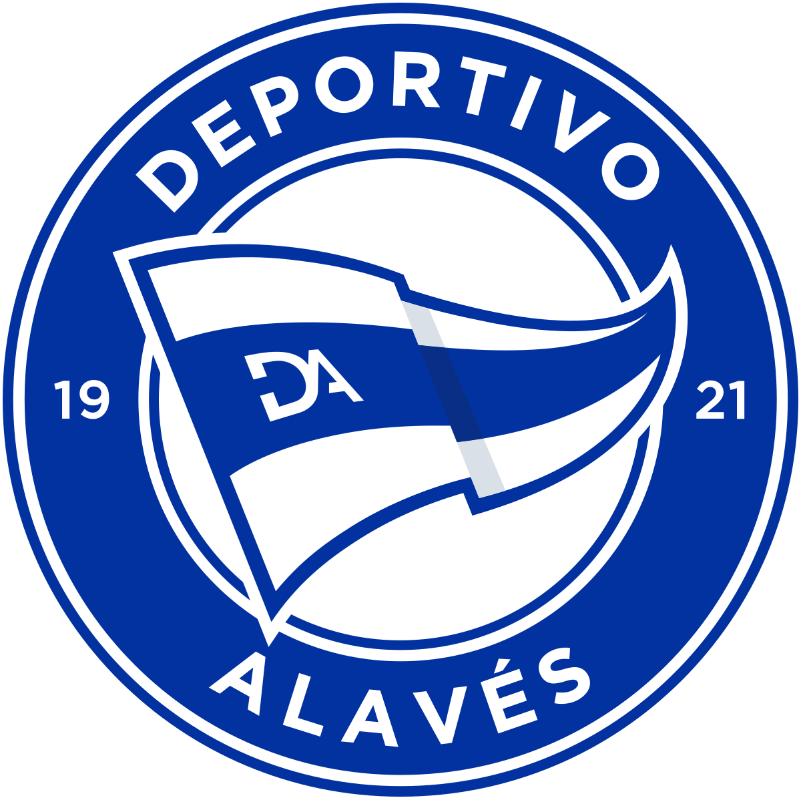
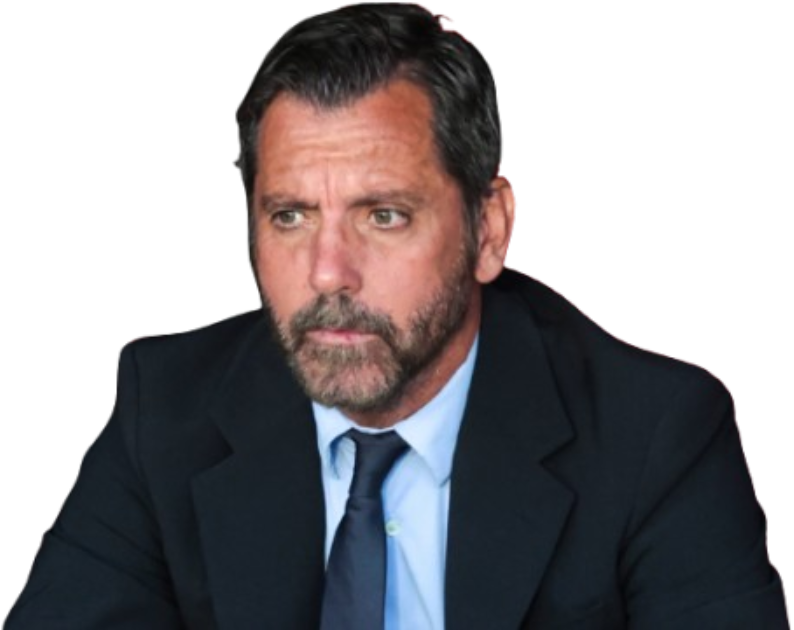
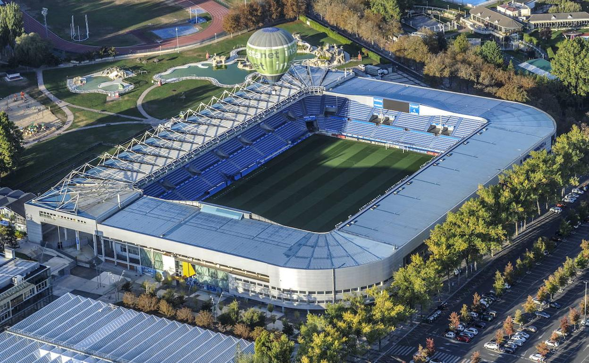

Treinador: Quique Flores
Quique Flores é um treinador de prestígio internacional que se destacou ao vencer a Liga Europa e a Supertaça Europeia pelo Atlético de Madrid. Com passagens marcantes pelo Benfica e Valencia, consolidou a sua carreira como um técnico de referência nas ligas de elite.

Estádio: Mendizorroza
O Estádio de Mendizorroza é a casa do Deportivo Alavés, localizado em Vitoria-Gasteiz, Espanha. Inaugurado em 1924, é o terceiro estádio mais antigo do futebol profissional espanhol que ainda não mudou de localização.

Estilo de Jogo:
O estilo de jogo de Quique Flores no Alavés, em maio de 2026, é definido pela tentativa de equilibrar a sua tradicional solidez defensiva com uma nova agressividade ofensiva necessária para a luta pela manutenção.
"Alta la Frente!"